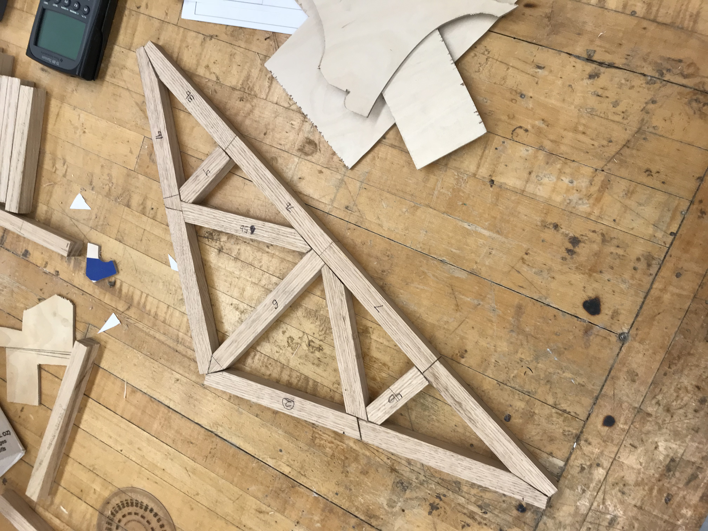
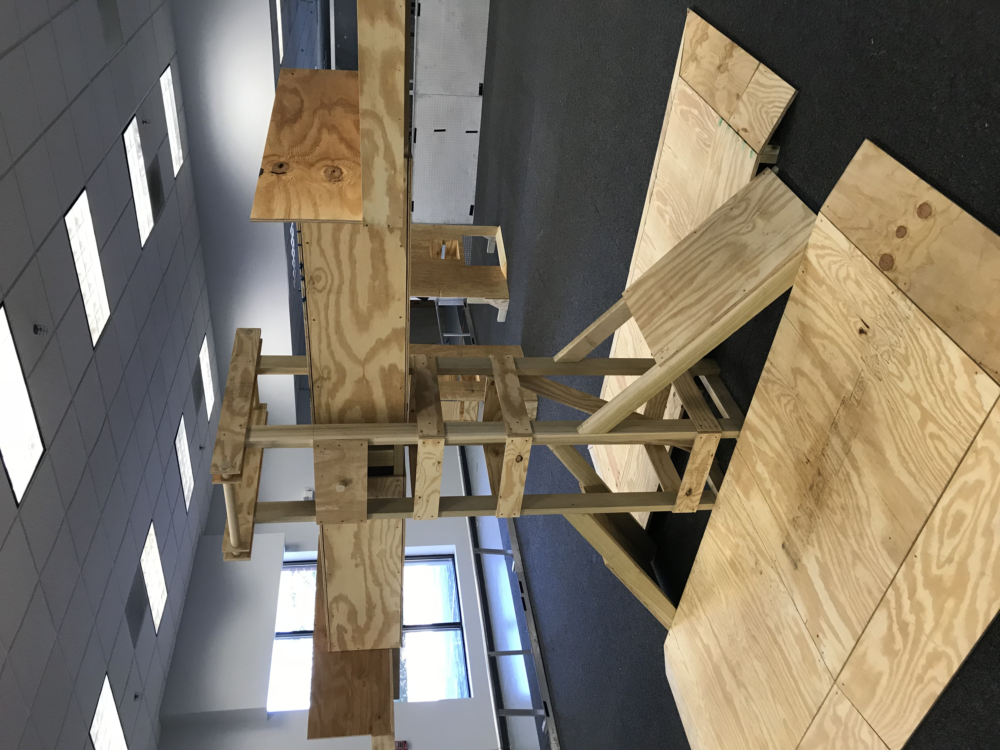
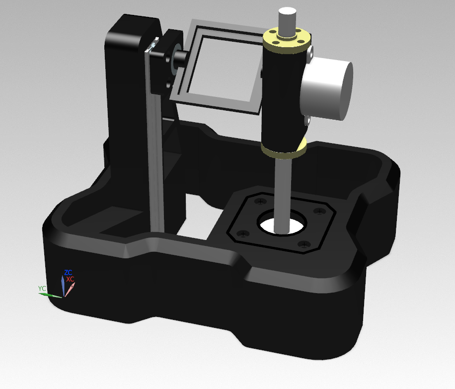
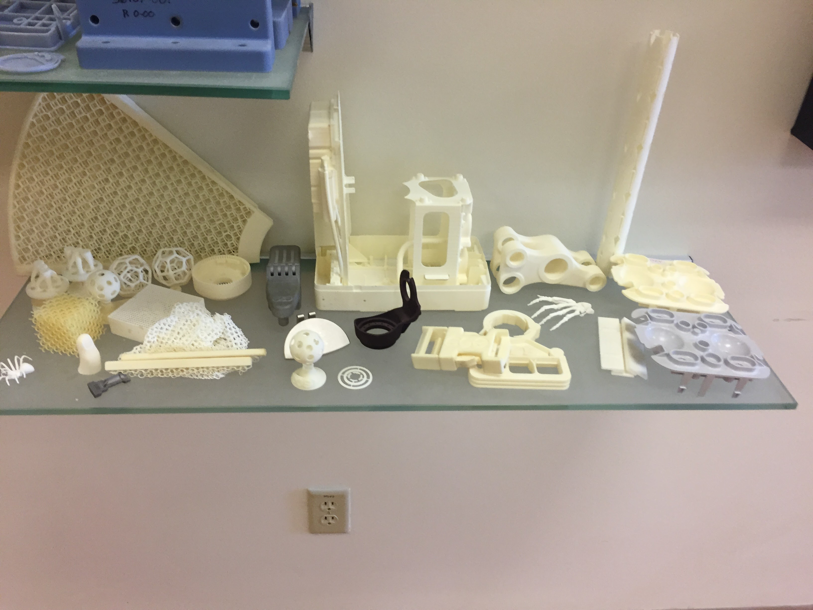
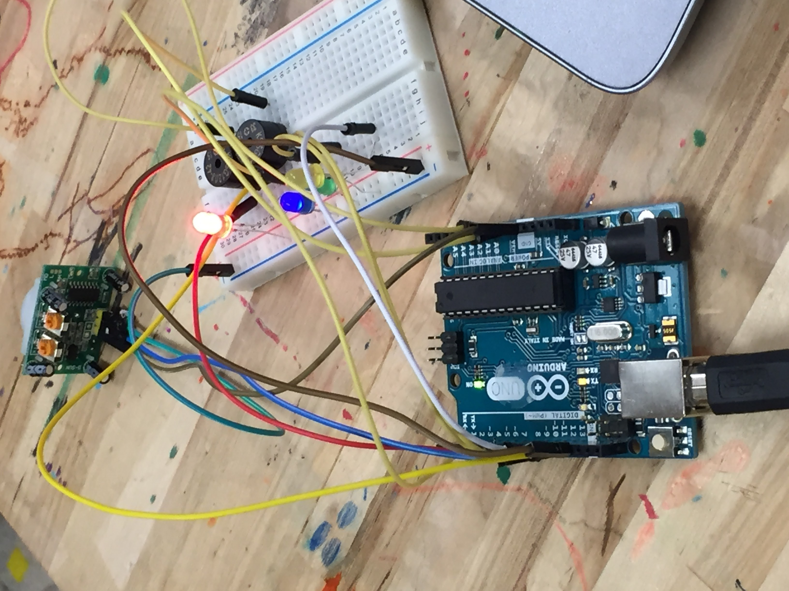

A gallery of hands-on engineering, prototyping, and maker projects
Engineered a wooden truss structure using static analysis principles to optimize load-bearing capacity.

Constructed a detailed replica of an FRC field piece using plywood and standard lumber for realistic practice and testing scenarios.

Developed a custom tilt table from off-the-shelf and 3D printed parts, designed to test an Inertial Measurement Unit (IMU) sensor against known positional benchmarks.

Created various functional and educational components during my tenure at the KID Museum's 3D Design Lab in Bethesda, MD.

Designed and built a basic Arduino-powered ultrasonic sensor circuit for educational workshops teaching DIY electronics.
